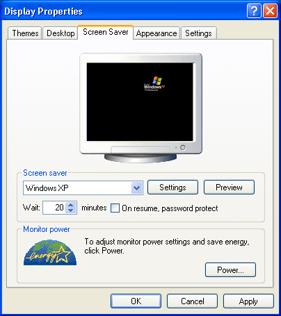
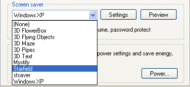

Free
computer Tutorials
|
Free
computer Tutorials
|
|
 home home |
Stay at Home and Learn | ||||
Setting a Screen Saver in Windows XP
A Screen Saver is something that kicks in when your computer has been idle for a set period of time. They are usually some form of animation, or moving imagery.
To pick a Screen Saver for your own computer, select the Screen Saver tab strip from the Display Properties dialogue box by clicking on the word "Screen Saver" once with your left mouse button. It looks like this:  Click the little black down-pointing arrow to see a list of available Screen Savers. This one is set to the Windows XP Screen Saver.  You can see that it also says "Wait 10minutes". This means that the Screen Saver will kick in if the mouse has not been moved for 10minutes. You can change this figure. The values go from 1 minute to 60 minutes. When you're happy, click Apply then OK. But play about with the settings on the Screen Saver tab strip. The Energy saving features of the monitor section is not available for all computer monitors, so you may or may not have the part available to you. There are lots and lots of Wallpaper and Screen Saver web sites out
there internet. These sites will offer a wide variety of wallpapers
and Screen Savers that you can use to liven up your own computer. But
be careful of files sent to you by email that pretend to be a Screen
Saver (Check for a file that ends in .SCR). There is a good change it
will be a computer virus! If the file has been sent to you from somebody
you don't know - don't open the attachment. Just delete the whole email. In the next section, we'll take a look at how to configure a new email account, and email things in general.
<--Back One Page Move on to the Next Section--> <--Back to the Beginner's Computing Contents Page View all our Home Study Computer Courses
|
|||||
|